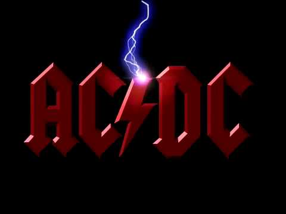

O maior Show de Rock do Brasil começa em:
O maior Show de Rock do Brasil começa em:
Foi composta no ano de 1990 pelos irmãos Angus Young e Malcolm Young, além do vocalista Brian Johnson e está presente no álbum The Razors Edge. No YouTube a canção tem 1.3 bilhões de visualizações, sendo a música mais vista do canal do ACDC na plataforma.
A canção ficou em 4º na lista das 40 Maiores Canções Metal da VH1. Ficou também em 187º na lista das 500 melhores canções de todos os tempos da Rolling Stone. "Back in Black" foi certificado com o RIAA Platinum Ringtone por ter registado a venda de mais de um milhão de downloads legais.
A música 'Highway To Hell' da banda australiana AC/DC é um hino do rock que captura a essência da rebeldia e da busca pela liberdade. Lançada em 1979, a faixa se tornou uma das mais icônicas do grupo e é frequentemente associada ao estilo de vida rock and roll, marcado por excessos e desapego às convenções sociais.
A canção foi escrita por três integrantes da banda, Brian Johnson, Angus Young e seu irmão, Malcolm Young. A canção aborda relações íntimas praticadas por um casal durante uma noite.